Every example below is a single self-contained HTML file running the real library. View source on any of them to see the exact options used.
Toggle options, switch stack modes and edit data against a live timeline, without writing any code.
Applications
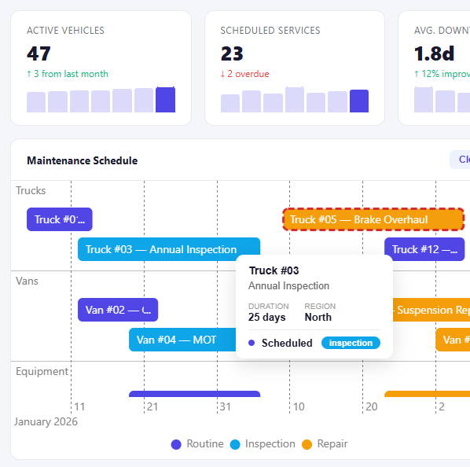
A timeline embedded alongside KPI cards and a detail panel, with region filtering driving the item set.
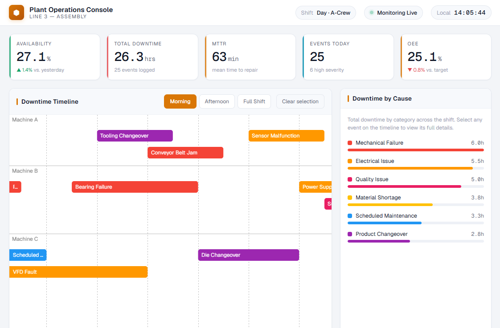
Machine downtime per line. Selecting a period populates a detail form from the same data source.
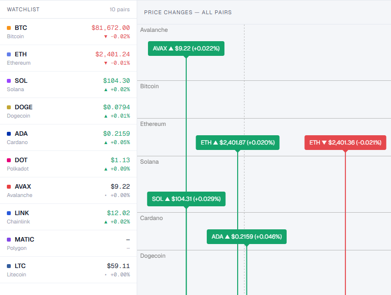
Live trades over a WebSocket. Each tick is appended and the view follows the latest point.
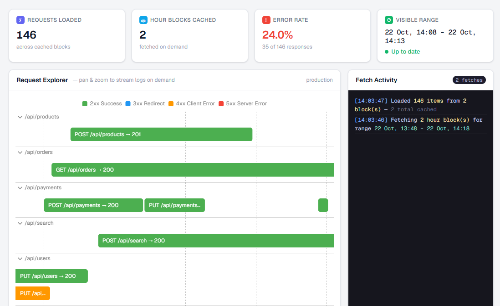
Server logs fetched per window. onRangeChange triggers a load for ranges not yet retrieved.
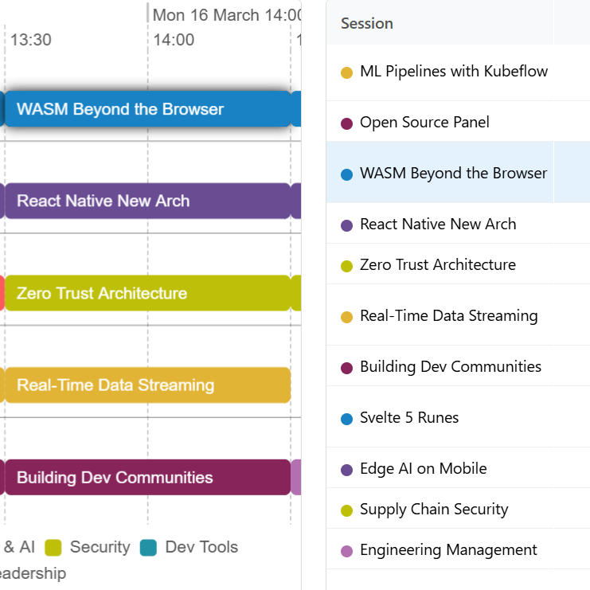
Controlled selection kept in sync both ways between a table and the timeline.
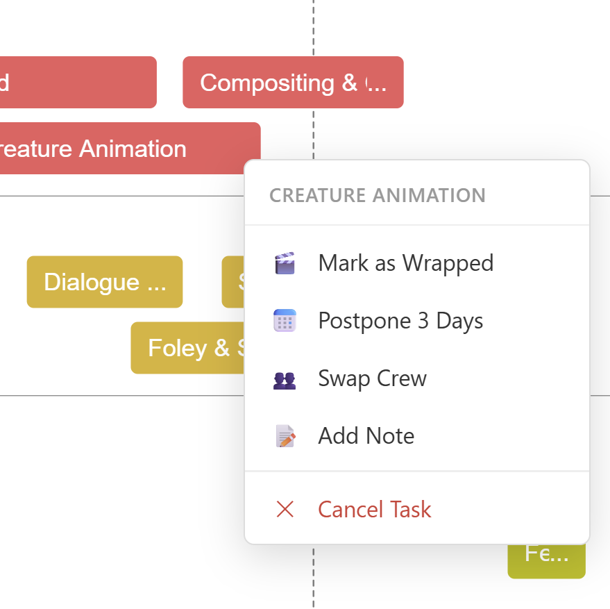
A film production schedule where right-clicking an item opens contextual actions at the pointer.
Features
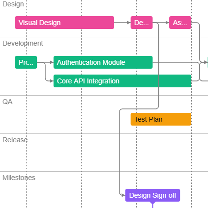
An app launch plan with finish-to-start arrows routed across planning, design, build, QA and release.
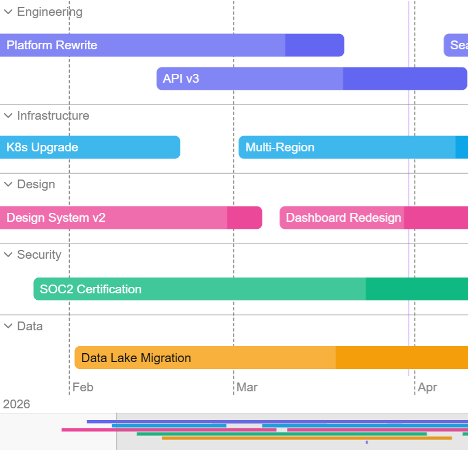
A year-long roadmap with the overview bar enabled for jumping between quarters.
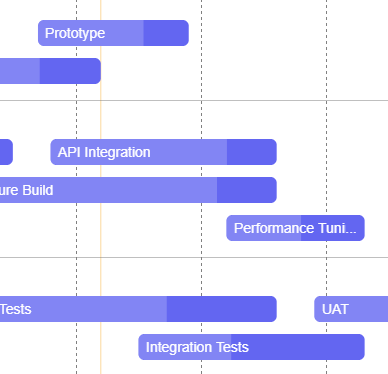
Completion shown as a fill inside each range item, clipped to the item's corner radius.
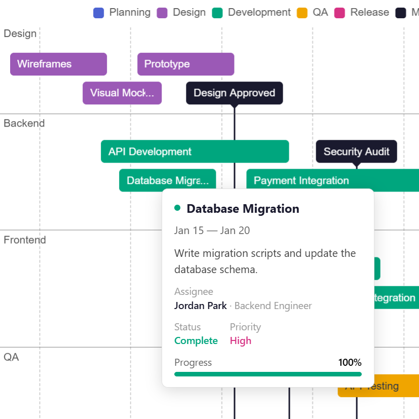
Tooltip content built from your own DOM, with assignee, status and progress.
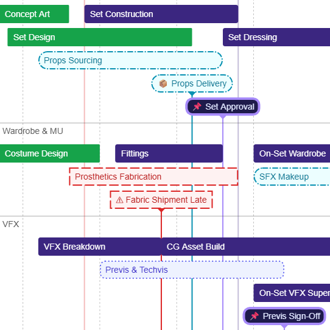
Borders, dash patterns, colours and radii applied per item to encode status.
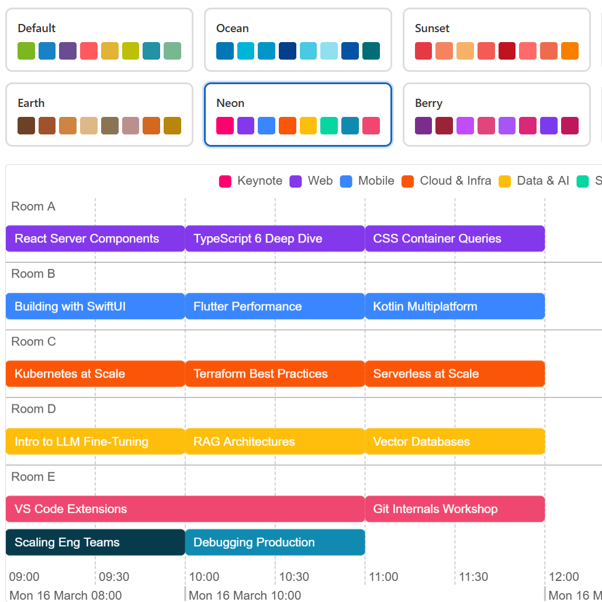
Categories without an explicit colour draw from the global palette. Swap it at runtime.
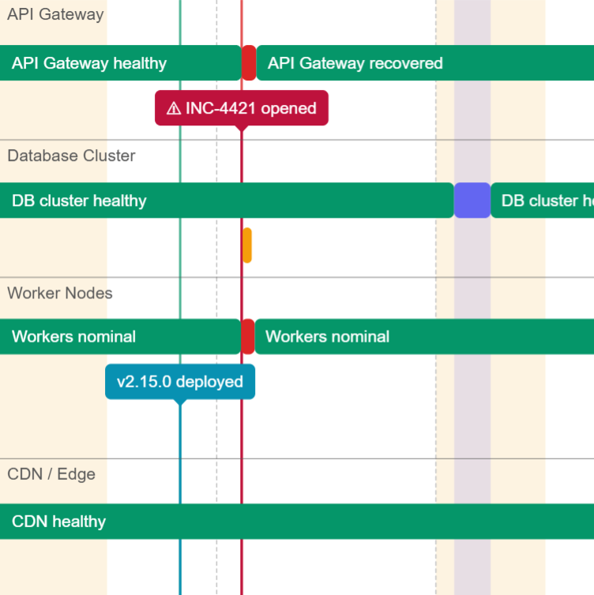
Cluster events with maintenance windows and incident periods shaded behind the items.
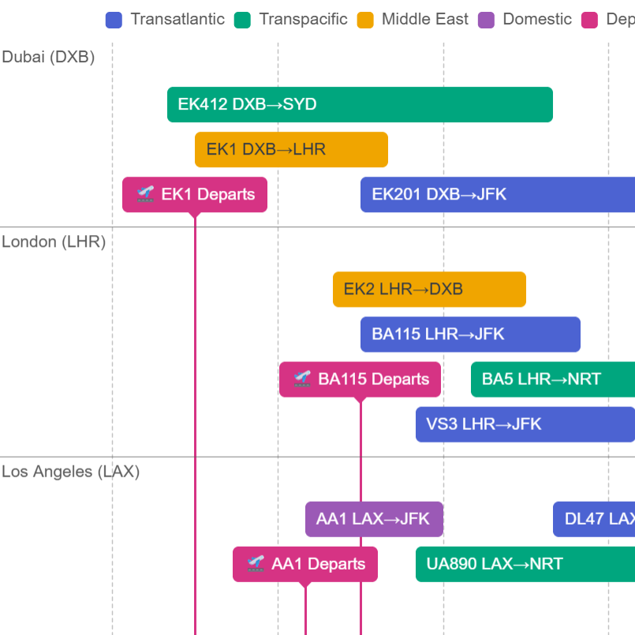
A Luxon date adapter registered in place of the native one, with the display zone switchable live.
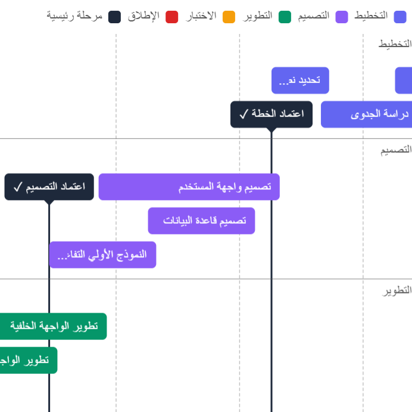
An Arabic project schedule with the axis, items, legend and tooltips all mirrored.
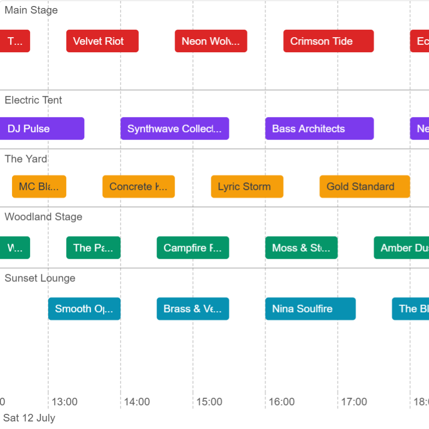
Export the current view as PNG, JPEG or WebP, with device pixel ratio and background colour options.
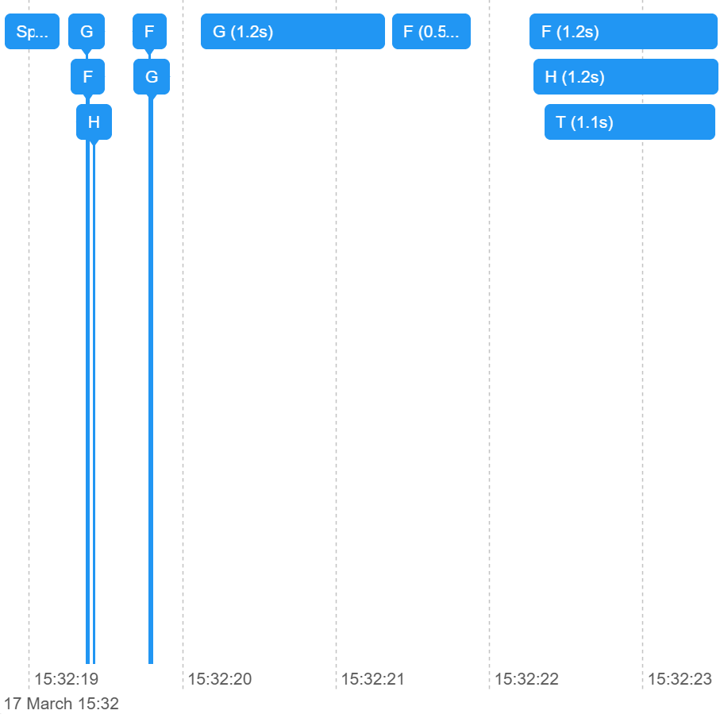
Keystrokes captured as point-in-time items, zoomed to a sub-second range.
Single-option demos